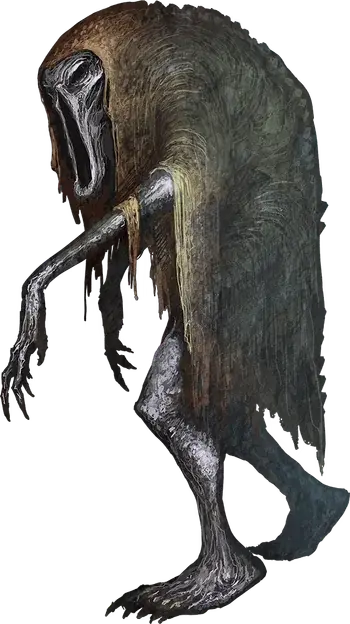

Бодак
Bodak
Средняя Нежить, обычно хаотично-злая

Класс Доспеха 15 (природный доспех)
Хиты 58 (9к8 + 18)
Скорость 30 футов
| мод | спас | ||
|---|---|---|---|
| СИЛ | 15 | +2 | +2 |
| ЛОВ | 16 | +3 | +3 |
| ТЕЛ | 15 | +2 | +2 |
| мод | спас | ||
|---|---|---|---|
| ИНТ | 7 | −2 | −2 |
| МДР | 12 | +1 | +1 |
| ХАР | 12 | +1 | +1 |
Навыки Восприятие +4, Скрытность +6
Сопротивление урону огонь, холод; дробящий, колющий, рубящий от немагических атак
Иммунитет к урону некротическая энергия, яд
Иммунитет к состояниям отравление, очарование, испуг
Чувства тёмное зрение 120 футов, пассивное Восприятие 14
Языки Бездны
Опасность 6 (2300 опыта)
Бонус мастерства +3
Среда обитания Болото, Город, Подземье
Особенности
Языки. Язык Бездны и языки которые знало при жизни.
Взгляд смерти. . Когда существо, видящее глаза бодака, начинает свой ход не далее 30 футов от него, бодак может заставить его совершить спасбросок Телосложения Сл 13, если бодак не недееспособен и может видеть существо. Если спасбросок провален на 5 очков и более, то хиты существа уменьшаются до 0, если существо не имеет иммунитета к состоянию испуган. В другом случае существо получает 16 (3к10) урона психической энергией при провале.
Если существо не застали врасплох, то оно может отвести глаза и избежать спасброска в начале своего хода. Тогда оно получает помеху на броски на попадание по бодаку до начала своего следующего хода. Если же существо взглянет на бодака между этим, то оно тут же совершает спасбросок.
Чувствительность к солнечному свету. . Бодак получает 5 урона излучением если начинает свой ход на солнечном свете. Будучи на солнечном свете бодак получает помеху на спасброски и проверки способностей.
Необычная природа. Бодаку не нужен воздух, пища, питье или сон.
Действия
Кулак. . Рукопашная атака оружием: +5 к попаданию, досягаемость 5 футов, одна цель. Попадание: 4 (1к4 + 2) дробящего урона плюс 9 (2к8) урона некротической энергией.
Иссушающий взгляд. Одно существо, которое бодак может видеть не далее 60 футов от себя, должно совершить спасбросок Телосложения Сл 13, и получить 22 (4к10) урона некротической энергией при провале или половину при успехе.
Бонусные действия
Аура уничтожения. Бодак может активировать или деактивировать эту способность бонусным действием. Будучи активной аура наносит 5 урона некротической энергией любому существу, которое заканчивает свой ход не далее 30 футов от бодака. Нежить и Исчадия игнорируют этот эффект.
Описание
Бодак – это неживые останки того, кто почитал Оркуса. Лишенный жизни и души, он существует только для того, чтобы нести смерть.
Поклоняющийся Оркусу может принести ритуальные клятвы и вырезать символ лорда демонов на груди над сердцем. Сила Оркуса свежует тело, разум и душу, оставляя лишь разумную оболочку, которая засасывает в себя всю жизненную энергию вокруг. Большинство бодаков появляются именно так, а потом отправляются нести смерть во имя Оркуса.
Бодаки являются продолжением воли Оркуса вне Бездны, служат целям принца демонов и другим его миньонам.
Бодак сохраняет туманные воспоминания о своей прошлой жизни. Он ищет и бывших союзников и врагов, чтобы уничтожить их, так как его извращенная душа желает уничтожить все, что связано с его прошлой жизнью. Миньоны Оркуса являются исключением из этого желания; бодак считает их родственными душами и не обрушивает на них свой гнев. Любой, кто знал его до превращения в бодака, может узнать манеры или другие едва уловимые черты его прошлой личности.